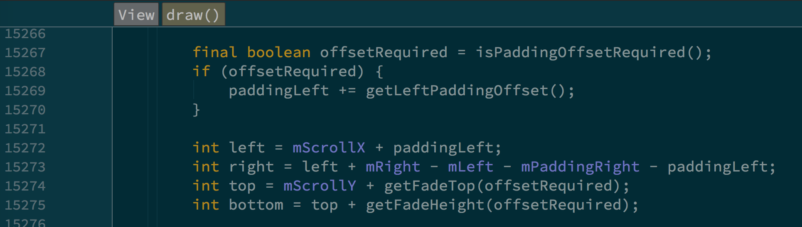

RecyclerView版本问题
RecyclerView 23.0.1版本和26.0的版本在measure过程有比较大的差异
如果父亲给定UNSPECIFIED的高度，23的版本会measure高度为0，而26的版本会measure出自己所需要的高度。
由上面这个问题导致对measure和layout的理解
getHeight和getMeasuredHeight
已经知道getMeasuredHeight给的是mMeasuredHeight的值，即测量值。而 getHeight给的是bottom-top的值。之前会认为控件会根据mMeasuredHeight 的值来计算bottom和top的值，时尚上，这并不是强相关的，甚至bottom和 top的值跟控件的实际宽高和布局都不要有关系。
一句话，layout和measure是完全不相关的过程，两个过程互不依赖各自的结果。举个例子。LinearLayout,父布局给定EXACTLY布局，子view计算后大于给定布局，最终LinearLayout的measure height为父布局指定的值。在 layout阶段，LinearLayout会将子view依次向下排，下一个view的top即上一个view的bottom，并不考虑LinearLayout的测量高度，以及父布局给的 t,l,r,b的范围。最终LinearLayout的内容会超出屏幕，而LinearLayout的 mMeasureHeight为父布局给的EXACTLY高度，且b-t = 这个高度。这是为什么呢？又有什么好处呢？t,l,r,b的值只会影响draw的范围，所以说， LinearLayout的实际内容可以超出屏幕，但他以这样的方式计算t,l,r,b，以告诉系统只需要绘制这部分内容，这样可以不绘制看不见的部分，从而提升绘制效率。所以上面这个例子可以更清楚的看到实际布局，绘制内容，实际高度，绘制高度以及测量高度的关系。
MeasureSpec的AT_MOST,EXACTLY,UNSPECTFIED与MATCH_PARENT，WRAP_CONTENT的关系
涉及到measure过程的核心部分，通常这个对应关系是由layout自己来决定的，但Android将这一部分抽象来出来，大部分控件会默认采用这种对应关系，少数控件会根据自己的情况做调整，比如scrollview，即使父亲给来EXACTLY，他也会在可滚动的方向上给子控件UNSPECTFIED。
这个核心部分体现在ViewGroup的两个函数上：
- getChildMeasureSpec() 根据父布局建议的spec，自身的布局特点以及子view的layout属性决定子 view的spec
- resolveSizeAndState() 根据父布局建议的spec，自身的布局特点，以及测量完子布局之后的实际高度最终决定自己的实际测量高度。
scroll
 :ATTACH:
scroll是从view级原生支持的，主要是mScrollY和mScrollX两个变量， range,extend和offest三个函数会结合控件的宽高计算，计算方式可以参考代码。
对于上面LinearLayout的例子，超出可视范围的画布上是有东西的，或者这么说，控件知道在超出可是范围内的区域应该画什么内容，在布局阶段就已经决定了每个区域画什么内容，画不画是另外一个问题，测量大小，实际绘制大小，以及实际绘制区域都和不改变没个区域应该画什么内容的这个事实，他只跟实际内容范围有关系。所以当发生滚动时，无需考虑测量大小，绘制大小，都可以正常的绘制出对应区域的内容，即滚动是有效的。
NestedScrollView的fling问题
NestedScrollView的scroll是没有问题的，但是fling效果是无法从内到外的连续起来的。有两种实现思路：
- 由外部控件全权控制fling，外部控件自有scroller，然后调用子控件的 scrollby函数。这样有个缺点，像RecyclerView这样的控件，内部有自己的fling逻辑，如果全权由外部承包了，效果可能会有问题
- 在外部fling到无法fling的时候获取当前剩余的速度，调用子控件的fling。这样是可行，外部自定义控件是知道自己能够滚动的距离以及剩余滚动速度的。但是另外一种场景，需要先fling内部控件，内部不可滚动时通知外部，这就有点尴尬了，不好拿当前的滚动速度。
- 另外实测过程种发现，即使是NestedScrollView事件传递也是要考虑的，事件先给外面再给内部和先给内部再给外部是不一样的，会有一些问题，所以要结合事件传递与Nested机制一起考虑。